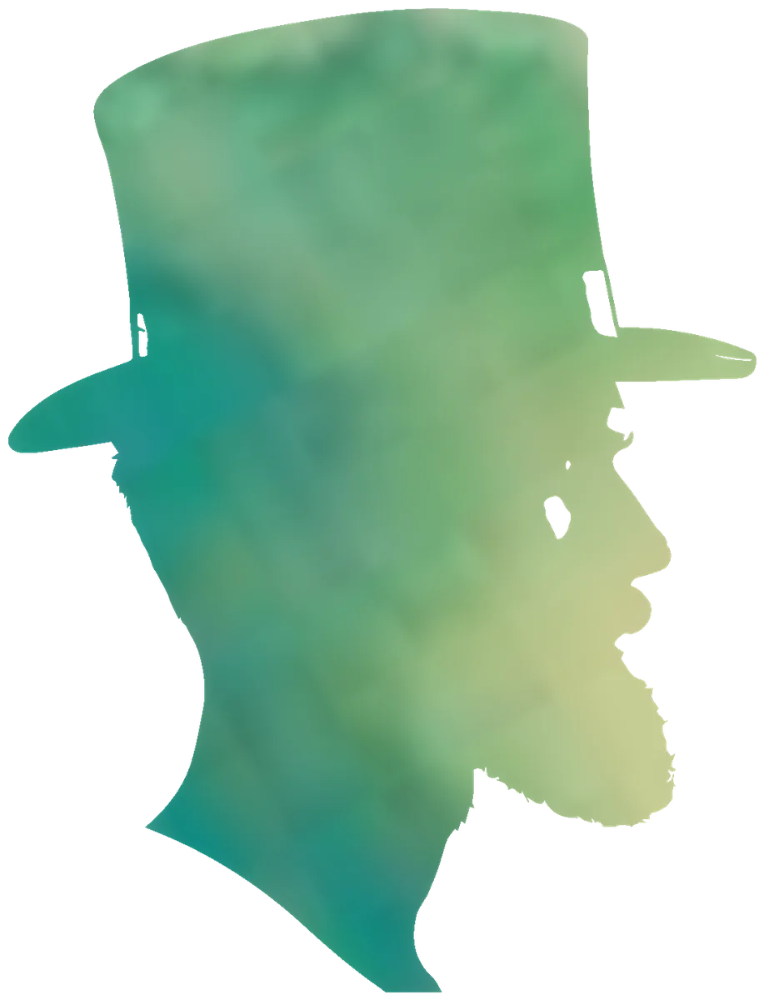
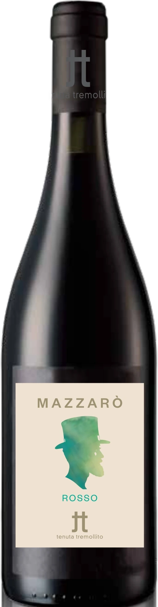

Tenuta Tremollito
MAZZARÒ
Frappato 70%, Nero d’Avola 30% · IGT Terre Siciliane
Tem o nome de Mazzarò, o proprietário de La roba, de Verga (1880), que queria toda a terra que conseguia ver.
O Frappato é de Vittoria, no sudeste da Sicília. Uma carta do comendador Rosario Cancellieri ao barão Mendola, em 1879, regista-o ali já no século XVII.

Ficha técnica: MAZZARÒ
Frappato 70%, Nero d’Avola 30%
Rubi. Aroma especiado. Seco e sápido, com fruta vermelha, acidez agradável e boa persistência.
- Casta
- Frappato 70%, Nero d’Avola 30%
- Zona de produção
- Monte Altore, Vizzini (Catânia)
- Altitude
- Entre 500 e 600 m
- Solo
- Arenoso e vulcânico, rico em minerais, ligeiramente ácido
- Clima
- De montanha e colina alta, muito ventilado, com grandes amplitudes térmicas entre o dia e a noite
- Condução
- Vinhas em espaldeira
- Idade das vinhas
- 5 a 10 anos
- Densidade
- Cerca de 5.500 cepas por hectare
- Produção por hectare
- 7.000 kg/ha
- Vindima
- À mão, em outubro, conforme o tempo
- Vinificação
- Desengaçadas, esmagadas e fermentadas em inox a temperatura controlada, com maceração de duração média
- Estágio
- Cerca de 3 meses em barricas e cerca de 6 meses em garrafa
- Teor alcoólico
- 14%
- Servir a
- 18°C
IGT Terre Siciliane
Rótulo eletrónico · Ingredientes e informação nutricional
A informação obrigatória no rótulo segundo o Regulamento (UE) 2021/2117. Sem conteúdo promocional nesta parte da página.
| Ingredientes | A enviar pelo enólogo |
|---|---|
| Alergénios | A enviar (contém sulfitos) |
| Energia por 100 ml | — kJ / — kcal |
| Hidratos de carbono por 100 ml | — g, dos quais açúcares — g |
| Álcool | 14% |
| Embalagem e reciclagem | A enviar |